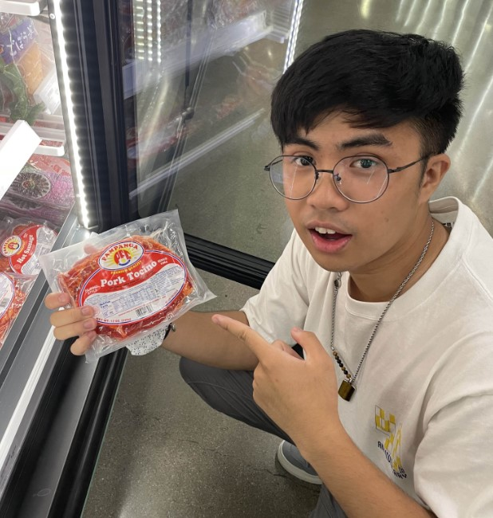

Hey there!

My name is Vinpatrik, but Vin works too! I'm a 4th year CSC major and I love combining art and computer science to make fun things for people and with people.
I have a lot of experience with SQL, and I have a bit of experience with full stack web development. Regardless of that experience, I'm always ready to learn!
Unrelated to programming, I enjoy taking pictures of wildlife and keeping up with video games!
I'm always looking to utilize my skills in a way that can be of use to the world.